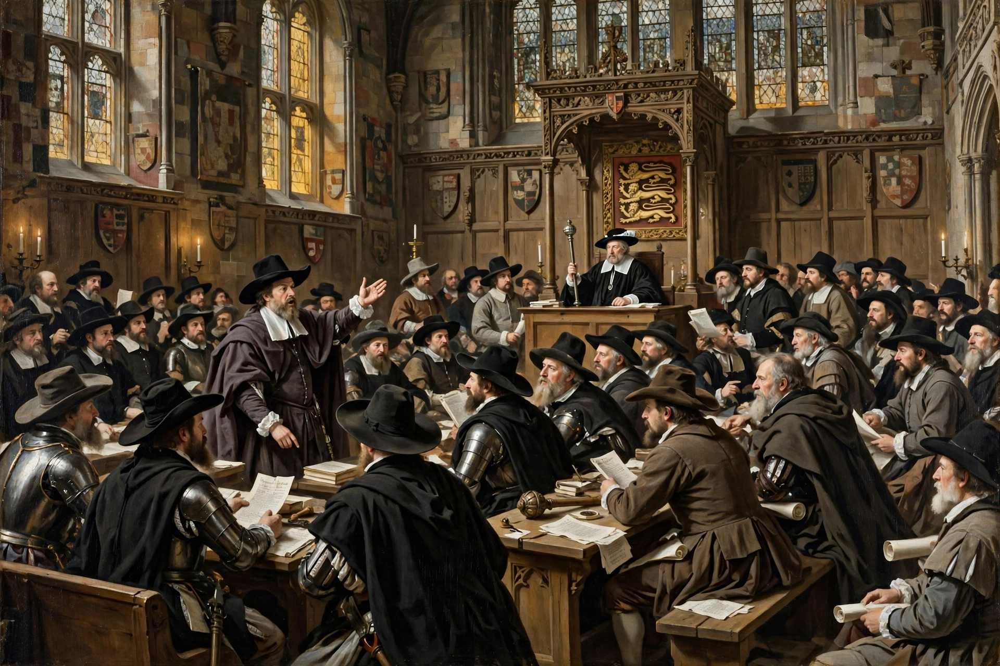

The Long Parliament was an English Parliament summoned by King Charles I on 3 November 1640, following the Short Parliament and the Bishops' Wars. It sat, with interruptions, until 1660.

Long ParliamentLed by figures such as John Pym, Parliament impeached the Earl of Strafford (executed 1641), abolished Star Chamber and ship money, and passed the Triennial Act. The Grand Remonstrance (1641) catalogued grievances against Charles.
Charles's attempted arrest of the Five Members in January 1642 precipitated the English Civil War. In 1648 Pride's Purge expelled moderates, leaving the Rump Parliament, which tried and executed Charles I in 1649 and declared a Commonwealth. Oliver Cromwell dissolved the Rump in 1653.
Recalled in 1659–60, the remaining Long Parliament members voted to dissolve itself, paving the way for the Convention Parliament and the Restoration of Charles II. See English Civil War, Charles I.